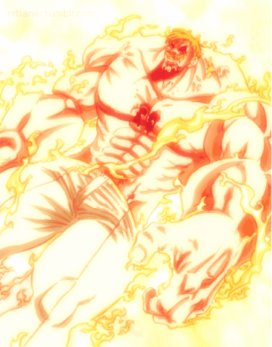

ESCANOR

Escanor「エスカノール」 is a member of the Seven Deadly Sins and is known as the Lion's Sin of Pride. He is renowned for gaining immense power during the day, and gradually becoming weaker with the setting of the sun, leaving him frail and submissive at night. His Sacred Treasure is the Divine Axe Rhitta. His inherent power is named Sunshine.
Currently Escanor's appearance is largely the same as his appearance in Vampires of Edinburgh, with the addition of a mustache and pair of glasses. Escanor's attire is a suit commonly worn by bartenders and although slightly baggy, does appear to fit his non-sunshine form far better than his previous attire. He temporarily wore spectacles during his first formal appearance in the plot. Ten years ago, he wore a suit of full body armor with a unique helm (which may be too large to fit him properly in the early morning or night, and conversely too small to fit him during the sunlight hours, particularly noon). Escanor was revealed during the Vampires of Edinburgh side story to be a very meek and weak looking young man, with short-cut hair and a set of clothes that seemed too large to fit him. His clothes were made to be intentionally loose so that they fit him properly. In the wanted poster, Escanor is depicted as a middle-aged man with a beard and a ponytail hairstyle. His lion symbol is on his back.